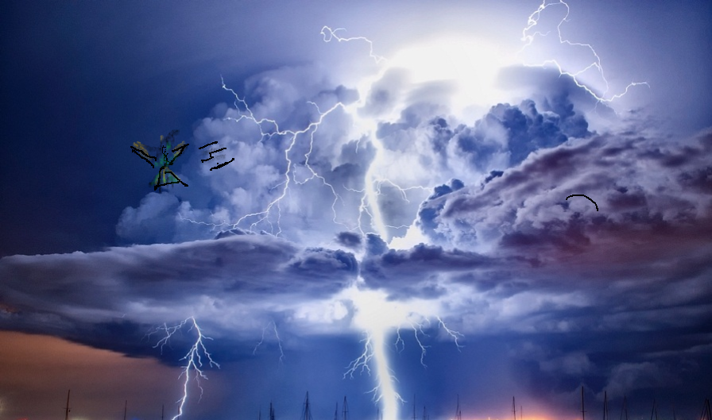

Princess Layyah noticed that every time the monster releases a lightning barrage the purple crystal on its neck would go dim. She also noticed that it took 5 seconds before the
page 1
crystal would return to full brightness only then the monster would be ready to strike with a thunderous volley of lightning. She thought to herself that this is the only weakness of the leviathan.
page 2
I must find a way to destroy that crystal If I am to kill the beast. The princess said to her best friend the humming bird as they hovered in the clouds a good distance away from the monster.
page 3
As they hovered, a light ray from the sun penetrated the clouds and hit the golden feathers Of Girly, the humming bird. "You are so brave and beautiful my friend", Layyah Exclaimed!
page 4
“You know I can hear you, right?”, Girly commented to Layyah. Did you forget that I can understand your words now? Girly asked. Helloooo! …Golden Feathers...remember? I’m becoming a guardian, don’t tell me you forgot already?
page 5
Princess Layyah looked at Girly and smiled. Yes, you are! “Right, are you ready Girly?” The Princess asked. “I was born ready!” Girly Replied. “What’s the plan?” Asked Girly. "We must break the purple crystal." Layyah said.
page 6
and it’s not going to be easy. Every time I use a light blast the leviathan just absorb the energy from the blast. But I think if we get close enough I can cut the crystal with the blue lightning blade.
page 7
“…keep in mind that inside the cloud vortex you are not able to use any of your new powers, Girly.” Yes, I know, Girly replied to Layyah. “I don’t have my lightning speed or Dimension travel. We will have to do this the old fashion way, “
page 8
Said Girly, as they stared at each other. This mission is going to be danger close and They both know it. But if they don’t succeed the Sky Leviathan would destroy the Northern Kingdom. If the Northern Kingdom is destroyed that would weaken the magic barrier
page 9
That holds the Mack-Aarrlack deep in the earth. If the Mack-Aarrlack escapes that could mean the End of all things as we know it! It would be impossible to stop the Sky Leviathan and the Mack-Aarrlack even with the help of the dragons. We must stop the Sky-Giant here!
page 10
For the first attack Princess Layyah and Girly flew as high as they could above the Sky demon. They dived as fast as they can using gravity and the fast beats of Girly wings to gain great speed. But the giant saw them coming and waved its huge tentacle which created a powerful wind.
page 11
The wind was so strong that it blew away the oncoming attack from the Princess and her trusted steed. “The wind is too strong!” Girly yelled as they went tumbling through the sky. When they finally gathered themselves, they ended up outside the Thunder-head.
page 12

But not for long as they quickly darted back into the cloud vortex to continue the battle.
page 13
Back at the castle, King Leo is observing the fight from the castle tower. He was very relieved when he managed to catch a glimpse of Princess Layyah and girly as they were blown outside of the massive thunder-head.
page 14
“She is alive and still doing battle!” King Leo yelled out to his army. The entire army erupted in a loud cheer. Go Princess Go!…Go Princess Go! and even though they could not see what was happening inside the cloud vortex it brought them hope.
page 15
No sooner had they arrived at the center of the vortex the great monster focused its gaze upon the heroes. Before the pair had any time to prepare the Sky-Leviathan released a powerful and wide blast with such speed that they could not get out of the way in time.
page 16
Knowing that they would not survive a direct hit from the energy blast Girly quickly wrapped Princess Layyah in her wings behind the golden feathers. As the blast was about make contact with Girly…She closed her eyes.
page 17
CRACK BOOM 💥 !!!!
page 18
A massive explosion rocked the sky and surrounding areas. King Leo noticed that something fell out of the bottom of the thunder-head and into the forest bellow. The King immediately mounted his humming bird and flew over the spot where he saw something fall.
page 19
As the King got close to where the object fell, he could see that it was Girly lying motionless in the grass. He landed his bird next to Girly. No sign of princess Layyah anywhere. As the other soldiers arrived Leo ordered them to look around for princess Layyah.
page 20
King Leo and the others gathered around Girly. Girly was Lying on her side. The King directed his soldiers to turn the bird over on her back. As they turned the heavy bird over, Girly’s wing flop to the side and out rolled princess Layyah.
page 21
The King fell to his knees in sadness once he saw Layyah lifeless body. My daughter, my brave and beautiful daughter! I’m so sorry, he screamed. The King hugged Layyah’s warm, lifeless body and wept.
page 22
Weeping uncontrollably the King heard a voice. Dad, why are you crying? With his eyes full of tears the King shouted “WHO SAID THAT?” Dad, it’s me…Layyah. Once King Leo came to his senses He wiped away the tears from his eyes and saw that Layyah’s eyes were opened.
page 23
The King, overcome with joy hug and kissed his daughter. You’re alive! you’re alive! Yes, dad I’m alive. Girly protected me by wrapping her wings around me. Girl took the full blast of the energy wave from Sky demon.
page 24
Layyah rose to her feet and ran over to Girly. She placed her head against Girly’s chest…No heartbeat. “Oh no, why did you do that? …You sacrificed your life to save me.” Now all is lost! Princess Layyah Turned around to witness the devastation of the Sky-Leviathan.
page 25
BREAK! BOOM! CRASH! buildings crumble to the ground as the giant laid waste to the Kingdom with its humongous tentacles. Witnessing the devastation to her home the princess hugged Girly and cried.
page 26
The princess tears rolled down her face dripping off of her chin and unto Girly. Then something magical happened. All of Girly’s feathers begun to change color. “Gold, her feathers are all changing to Gold!” The Princess said surprised.
page 27
King Leo turned to the princess and said “Of-Course, the final stage to become a guardian requires that the humming bird give its life to same its master. As the King began to explained Girly came back to life and stood up as all her feathers changed to a gold color.
page 28
A red diamond appeared on Girly’s forehead. Layyah ran over and hugged Girly. “I thought I lost you forever.” Layyah whispered. Look at you, you have finally become a Guardian and you look so beautiful. How is this possible, Girly asked? You don’t remember? Asked the princess.
page 29
The Last thing I remembered was hovering far away from the Monster when it released a huge Blast of energy. What happened? Girly asked. You protected me Girly. You sacrificed your life To save me. As a result of that selfless act, you became a Guardian, Layyah explained.
page 30
page 31
page 32
page 33